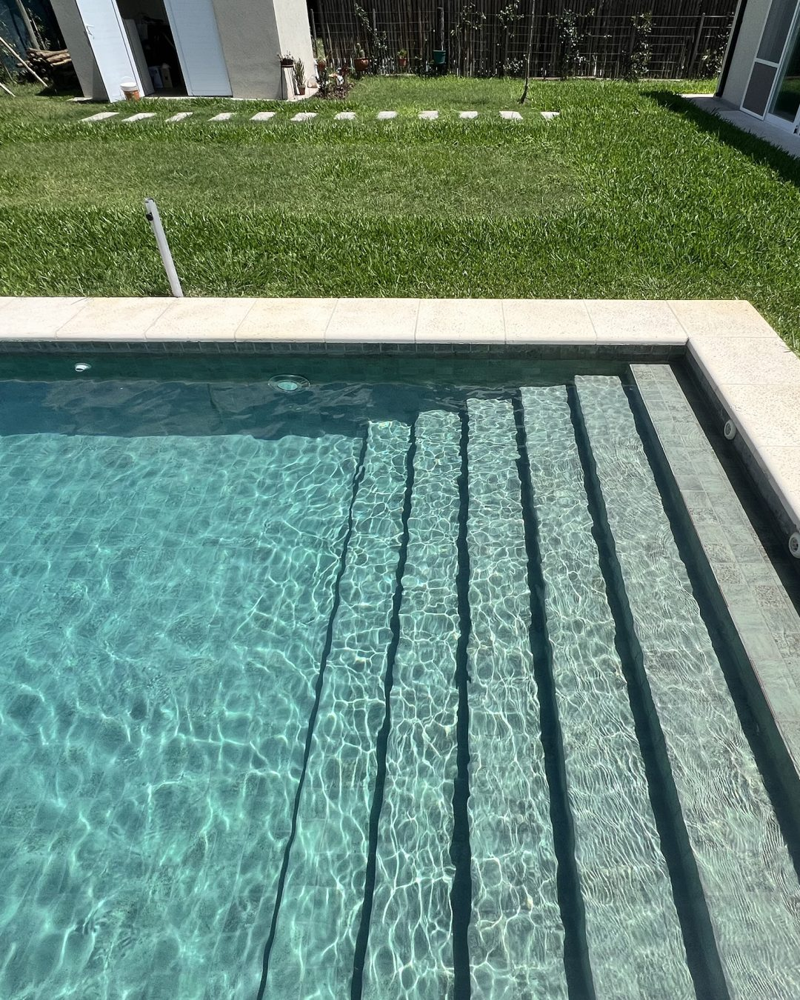
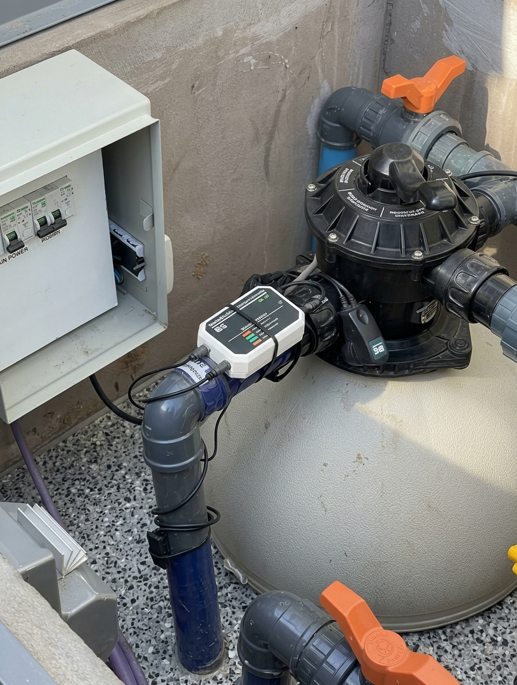

Iluminación LED
Transformá la piscina en el centro de tus noches al aire libre. La iluminación LED realza sus formas, mejora la visibilidad y crea el ambiente ideal para compartir, con bajo consumo y larga duración.
CotizarCosta Palmeras · Servicios
Explorá nuestros servicios para completar tu proyecto, cuidar tu piscina y disfrutarla por más tiempo.

Transformá la piscina en el centro de tus noches al aire libre. La iluminación LED realza sus formas, mejora la visibilidad y crea el ambiente ideal para compartir, con bajo consumo y larga duración.
Cotizar
El ionizador es un dispositivo que se incorpora al sistema de filtrado de la pileta y funciona mediante una tecnología que libera iones metálicos, principalmente de cobre y plata, en el agua. Estos iones actúan como agentes desinfectantes naturales, eliminando bacterias, virus y algas de manera eficaz y continua.
A diferencia de los métodos tradicionales que dependen exclusivamente del cloro, el ionizador permite reducir significativamente el uso de productos químicos, haciendo que el agua sea más saludable, suave para la piel, no irritante para los ojos y libre de olores fuertes. Además, contribuye a mantener el agua cristalina durante más tiempo y requiere menos mantenimiento.
Este sistema es ideal para quienes buscan una alternativa más natural y sustentable para el cuidado del agua, sin resignar calidad ni seguridad.
Cotizar
Es un dispositivo que se instala en la cañería de ingreso de agua a la pileta y tiene como función principal tratar el agua dura, es decir, aquella con alto contenido de minerales como calcio y magnesio. A través de impulsos electrónicos, este sistema modifica la estructura de estos minerales para que no se adhieran a las superficies ni se acumulen en el sistema de filtrado.
El uso del ablandador electrónico previene la formación de sarro en cañerías, bombas y revestimientos, prolongando la vida útil de todos los componentes de la pileta. Además, ayuda a mantener el agua más limpia, evita manchas en las superficies y mejora la eficiencia del filtrado.
Es una solución efectiva, sin uso de productos químicos ni necesidad de mantenimiento constante, ideal para quienes buscan cuidar su pileta a largo plazo y reducir problemas asociados al agua dura.
CotizarLa caldera eléctrica es un equipo que se conecta al sistema de filtrado de la pileta y permite climatizar el agua, elevando y manteniendo la temperatura deseada durante todo el año. Funciona mediante resistencias internas que calientan el agua al pasar por el equipo, de forma silenciosa, segura y sin emisiones.
Este sistema es ideal para quienes buscan disfrutar de su pileta incluso en los días más frescos, extendiendo la temporada de uso mucho más allá del verano. La caldera eléctrica es fácil de instalar, no requiere mantenimiento constante y permite un control preciso de la temperatura, adaptándose al confort de cada usuario.
Además, es una excelente opción para piletas residenciales, spas o instalaciones que valoran la comodidad sin necesidad de usar gas ni combustibles.
Cotizar